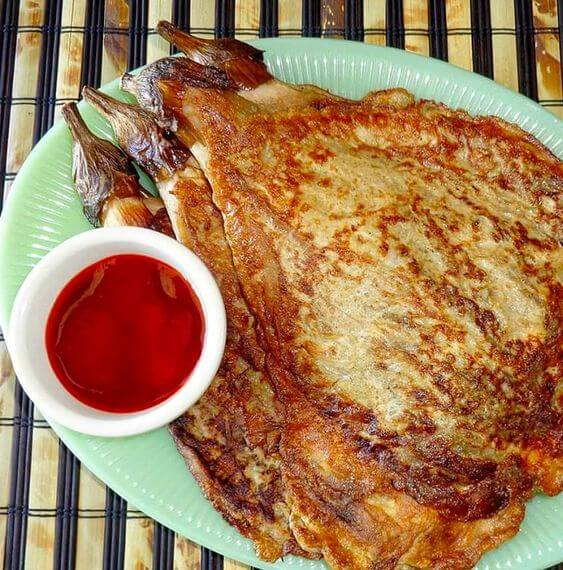
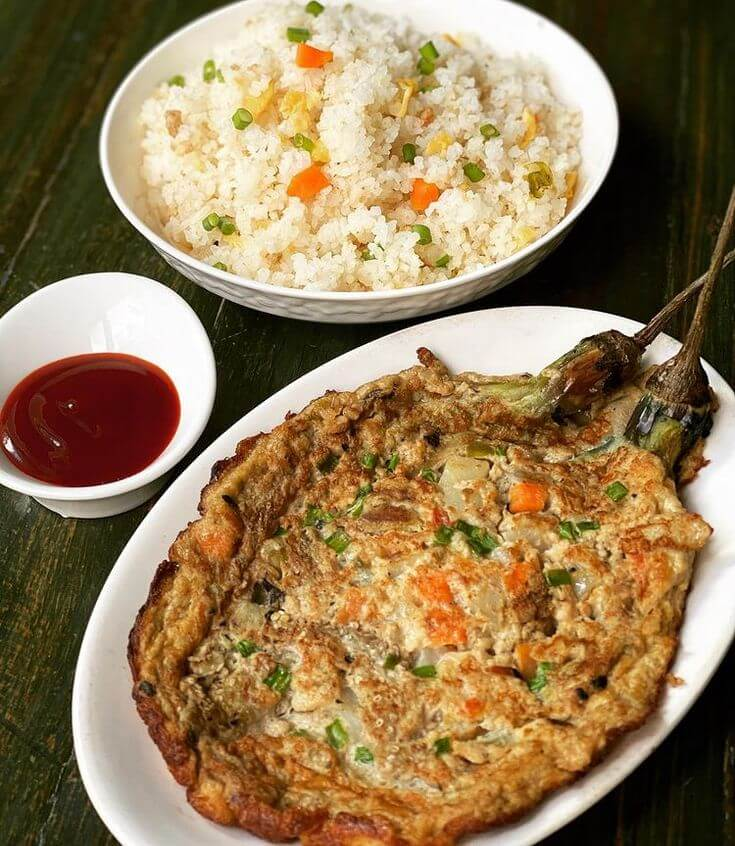
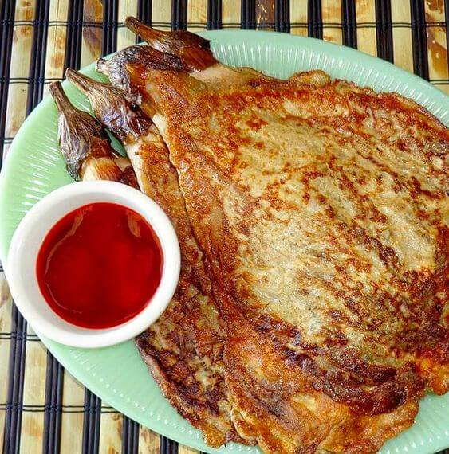
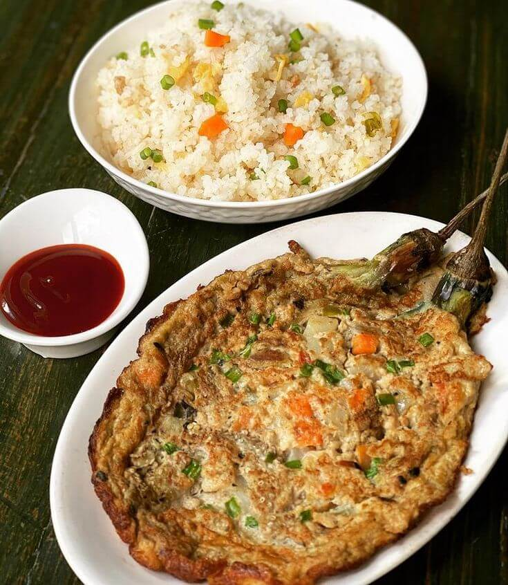

Sa malawak na palamuti ng mga lutuing Pilipino, ang Tortang Talong ay isa sa mga paborito at nakakaaliw sa
ating mga panlasa. Ito ay isang pagkaing pinakikinggan ng bawat lasa at puno ng sustansya na nagpapahayag ng
kultura at kasaysayan ng ating bayan.
Ang salitang "Tortang Talong" ay nagmula sa salitang Espanyol na "torta," na nangangahulugang "tortilla" o
"tinapay na may palaman." Ito ay isang lutuing gawa sa talong na nilalaga, inuuyam, at ibinabalot sa itlog
bago prituhin. Ang resulta ay isang tortang mayaman sa lasa at kakaibang lambot na hatid ng talong. Karaniwang
kasama rin sa Tortang Talong ang bawang, sibuyas, at paminta. Ito ay karaniwang inihahain kasama ng mainit na
kanin at sawsawan tulad ng toyo o suka.
Ang Tortang Talong ay hindi lamang isang simpleng pagkain; ito ay isang sining ng kasimplihan at sustansya na
nagpapahayag ng pagkakaisa ng mga Pilipino. Ito ay isang halimbawa ng ating kakayahan na gawing masarap ang
simpleng sangkap na talong. Ang Tortang Talong ay naglalarawan ng kagalingan at kahusayan ng mga Pilipino sa
pagpapahalaga at pagluluto ng mga lokal na sangkap.
Ang paghahanda ng Tortang Talong ay hindi lamang tungkol sa lasa nito, kundi pati na rin sa pagsasama-sama at
pagpapahalaga sa mga tradisyon ng mga Pilipino. Ito ay madalas na inihahanda sa mga pamilya bilang
pangkaraniwang ulam o bahagi ng pagsasalu-salo. Sa bawat pagluluto ng Tortang Talong, nabubuo ang mga masayang
alaala at samahan na nagpapalakas ng pagkakaisa at pagmamahalan ng mga Pilipino.
Ang Tortang Talong ay naglalaman ng yaman ng lokal na mga sangkap sa Pilipinas. Mula sa sariwang talong na
nagpapahayag ng likas na yaman ng ating bansa, hanggang sa mga pampalasa tulad ng bawang at sibuyas na
nagbibigay ng sarap at kahulugan, ito ay nagpapahayag ng pagpapahalaga ng mga Pilipino sa kanilang sariling
kultura at kalikasan.
Sa huli, ang Tortang Talong ay hindi lamang isang pagkaing nagpapabusog ng katawan, ito ay isang simbolo ng
kalinangan, sustansya, at pagkakaisa ng mga Pilipino. Ito ay nagpapaalala sa atin na ang pagkain ay hindi
lamang tungkol sa sustansya, kundi pati na rin sa pagpapahalaga ng ating kultura at mga likas na yaman.
Ang Tortang Talong: Isang Sining ng Simplicity at Sustansya
 


